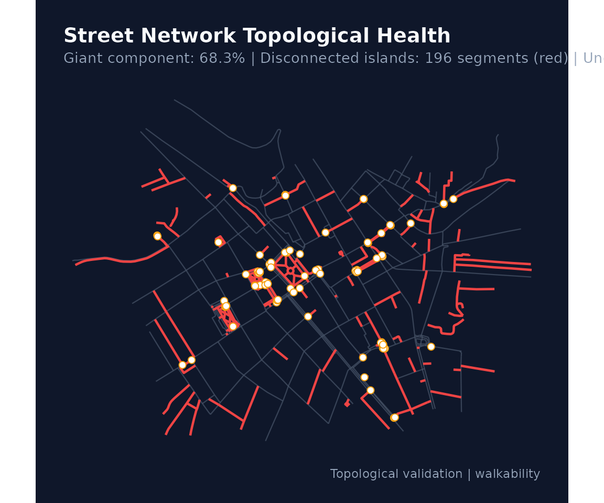
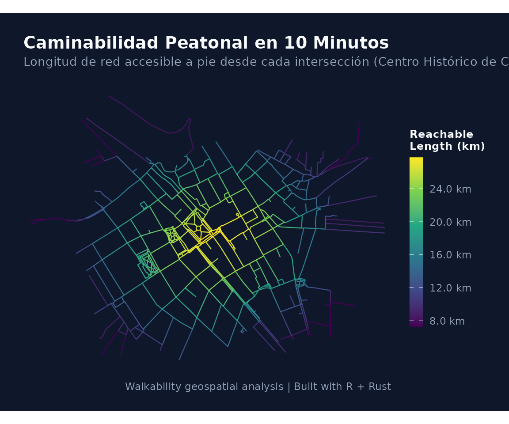

Guía de Inicio Rápido: Análisis de Caminabilidad Urbana con walkability
Source:vignettes/walkability-guide.Rmd
walkability-guide.RmdIntroducción
El paquete walkability es un sistema de
análisis geoespacial y teoría de grafos diseñado para modelar y medir la
caminabilidad urbana y transitabilidad activa a nivel
de calle.
Implementa el cálculo de la longitud de red caminable alcanzable en 10 minutos a pie (10-minute reachable walkable network length), utilizando un motor de alto rendimiento escrito en Rust paralelizado a nivel de CPU.
1. Flujo de Trabajo con Datos del Usuario
Una de las principales ventajas de walkability es que
permite procesar redes viales propias (archivos Shapefile, GeoPackage,
GeoJSON u objetos sf) con total control y transparencia
sobre el diagnóstico y la reparación topológica.
Para este tutorial utilizaremos la red vial del Centro
Histórico de Cusco (streets_cusco), distribuida
como dataset oficial del paquete en formato proyectado (UTM 19S,
EPSG:32719). También se incluyen datasets para Lima
(streets_lima) y Arequipa
(streets_arequipa).
Paso 1: Carga y Diagnóstico No Invasivo de la Red
Antes de modificar o corregir geometrías,
walk_diagnose_network() realiza una inspección no invasiva
de la salud topológica de la red:
library(walkability)
library(sf)
#> Linking to GEOS 3.12.1, GDAL 3.8.4, PROJ 9.4.0; sf_use_s2() is TRUE
# Cargar la capa real de Cusco incluida en el paquete
data(streets_cusco)
mis_calles <- streets_cusco
# Diagnóstico de conectividad y detección de undershoots en un radio de 5 metros
diag <- walk_diagnose_network(mis_calles, snap_search_radius_m = 5.0)
# Imprimir resumen de componentes e islas
print(diag)
#>
#> ── Walkability Network Health Diagnosis ────────────────────────────────────────
#> ✔ Total network analyzed: 484 segments (40.0 km)
#> ✔ Total components detected: 125
#> • Giant (main) component: 68.3% of network (27.3 km)
#> ! Detected 124 disconnected components / islands (12.69 km, 31.7% of network).
#> ℹ Identified 81 potential undershoots (dangling ends located <= 5 m from another street).
#> ! Recommendation: You can fix these by running walk_build_network(..., repair =
#> TRUE, snap_tolerance_m =
#> 5
#> ).
#>
#> Run `plot(diagnosis)` to inspect isolated segments and undershoots on a map.Para inspeccionar visualmente los tramos desconectados y la ubicación exacta de los undershoots:
plot(diag)
Paso 2: Construcción del Grafo y Reparación Opcional
Una vez revisado el diagnóstico, el usuario decide libremente si
aplicar reparaciones geométricas mediante los argumentos
repair, snap_tolerance_m y
planarize:
# Construir grafo peatonal limpio y estructurado
red_limpia <- walk_build_network(
data = mis_calles,
crs = 32719, # Proyección métrica local (UTM 19S)
walk_speed_kmh = 4.5, # Velocidad de diseño (4.5 km/h = 1.25 m/s)
repair = TRUE, # Decisión explícita del usuario de reparar
snap_tolerance_m = 5.0, # Conectar extremos a <= 5 metros (corrige el undershoot)
planarize = TRUE, # Dividir líneas en intersecciones
keep_components = "largest", # Conservar la componente gigante conectada
verbose = FALSE
)
print(red_limpia)
#>
#> ── Walkability Network ─────────────────────────────────────────────────────────
#> ✔ Total nodes: 822 (Giant component: 807)
#> ✔ Total edges: 1082 segments (38.2 km)
#> ✔ Walking speed: 4.5 km/h (1.25 m/s)
#> ✔ Connected components: 5
#> ✔ CRS: EPSG:327192. Cálculo de la Métrica de Caminabilidad (Rust)
El cálculo del isócrono utiliza el algoritmo de Dijkstra con
crédito parcial de aristas (partial-edge
rule), ejecutado en paralelo en Rust con la librería
rayon:
# Por defecto se calcula para 10 minutos (time_min = 10.0).
# Para redes barriales o ciudades intermedias/pequeñas, el usuario puede
# ajustar libremente el parámetro (por ejemplo, time_min = 5.0 o 7.5):
metricas <- walk_compute_reach(
network = red_limpia,
time_min = 10.0,
verbose = FALSE
)
print(metricas)
#>
#> ── Walkability Reachable Network Length ────────────────────────────────────────
#> ✔ Isochrone Budget: 10.0 minutes (~750 m at 4.5 km/h)
#> ✔ Evaluated Nodes: 807
#> • Average Reach: 19.04 km
#> • Highest Reach: 28.08 km
#> • Lowest Reach: 0.75 km
#> • 5th-95th percentile: 7.8 - 27.4 km3. Visualización Cartográfica con ggplot2
Las funciones cartográficas de walkability están
construidas sobre ggplot2 y utilizan paletas
perceptualmente continuas como viridis:
# Mapa temático de caminabilidad
mapa <- walk_plot_reach(
reach = metricas,
palette = "viridis",
title = "Caminabilidad Peatonal en 10 Minutos",
subtitle = "Longitud de red accesible a pie desde cada intersección (Centro Histórico de Cusco)",
dark = TRUE
)
print(mapa)
4. Análisis de Circuidad y Desvío de Rutas
Para evaluar la permeabilidad y qué tan directos son los trayectos peatonales frente a distancias euclidianas:
circuidad <- walk_compute_circuity(red_limpia, sample_size = 50)
summary(circuidad$mean_circuity)
#> Min. 1st Qu. Median Mean 3rd Qu. Max.
#> 1.190 1.226 1.260 1.285 1.301 1.743Valores cercanos a 1.0 reflejan una retícula directa y
eficiente; valores sustancialmente superiores evidencian rodeos
obligados por cul-de-sacs o barreras físicas.